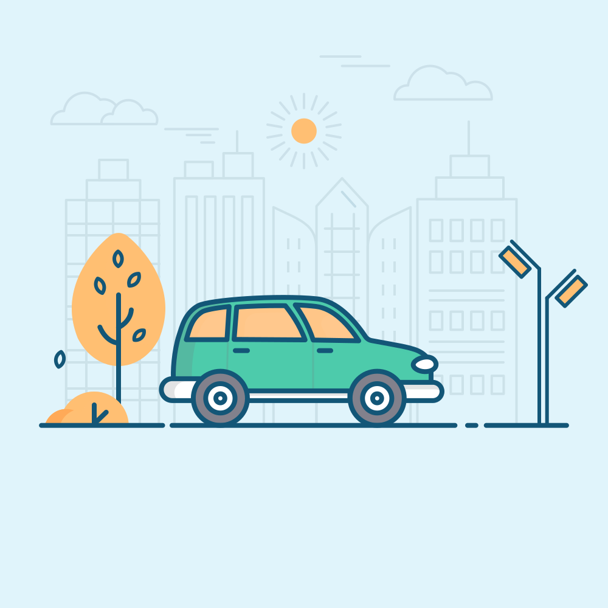

<div>
  <mat-toolbar color="primary">
    <span>
      City Explorer
    </span>
  </mat-toolbar>
  <div style="height: 90vh; display: flex; flex-direction: column; align-items: center; justify-content: space-between;">
    <h2 style="width: 30%;">It is a long established fact that a reader will be distracted by the readable content of a page when looking at its layout.</h2>
    <div
      style="display: flex; justify-content: space-evenly; margin-bottom: 10px; width: 100%;"
    >
      <button
      style="font-size: 20px;"
        *ngFor="let city of listCities"
        mat-raised-button
        (click)="onClick(city.name)"
      >
        {{ city.name }}
      </button>
    </div>
    
  </div>
  <div style="margin: 10px;">
    <div style="display: flex; align-items: center;">
      <div style="display: flex; flex-direction: column;">
        <h1 style="margin-right: 5px;">{{ summary }}</h1>
        <h1 *ngIf="teleport_city_score">
          Overall Score: {{ teleport_city_score }} / 100
        </h1>
      </div>
      
    </div>

    <div style="display: flex; flex-wrap: wrap; justify-content: space-evenly;">
      <mat-card
        style="
          width: 21%;
          padding: 20px;
          border: 1px solid black;
          margin: 10px 0;
          text-align: center;
        "
        *ngFor="let data of listQOLData"
      >
        <mat-card-title>{{ data.name }}</mat-card-title>
        <mat-card-content
          >Score: {{ data.score_out_of_10 }} / 10</mat-card-content
        >
      </mat-card>
    </div>
  </div>
</div>
